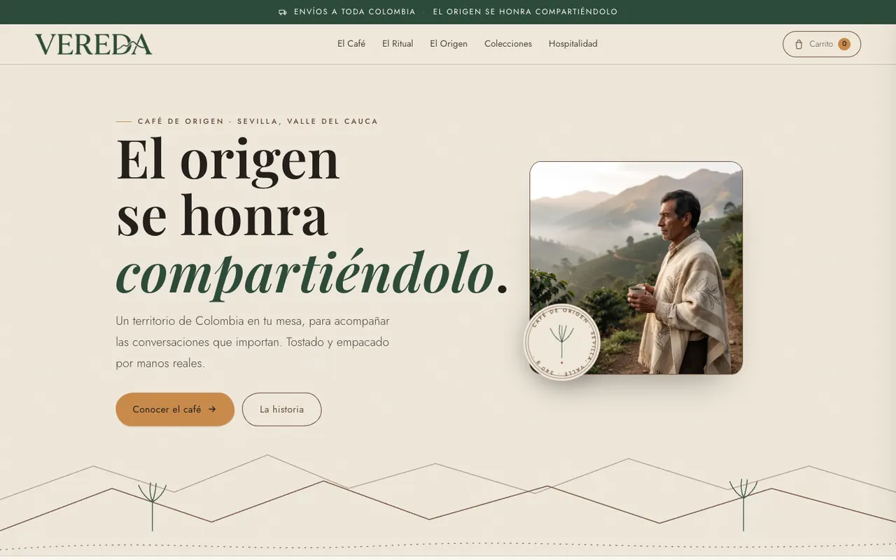
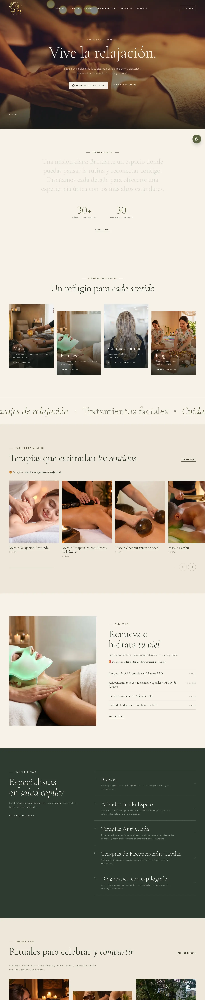
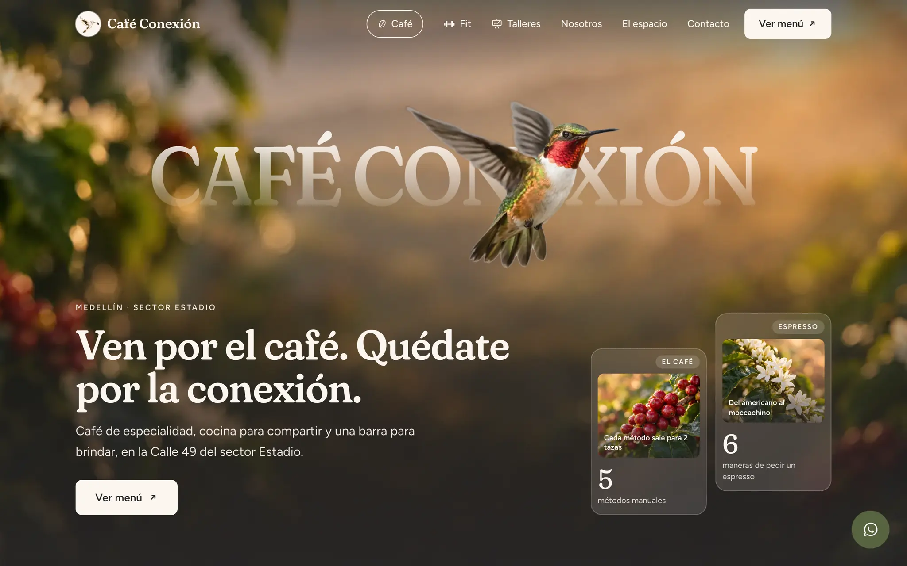
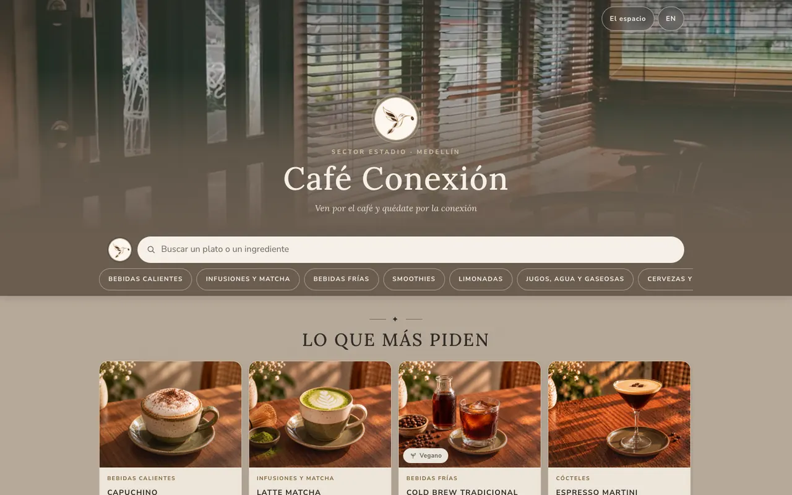
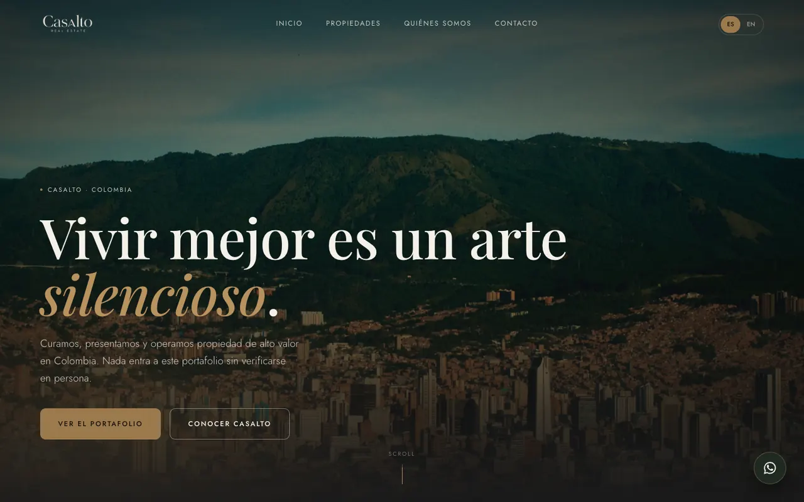
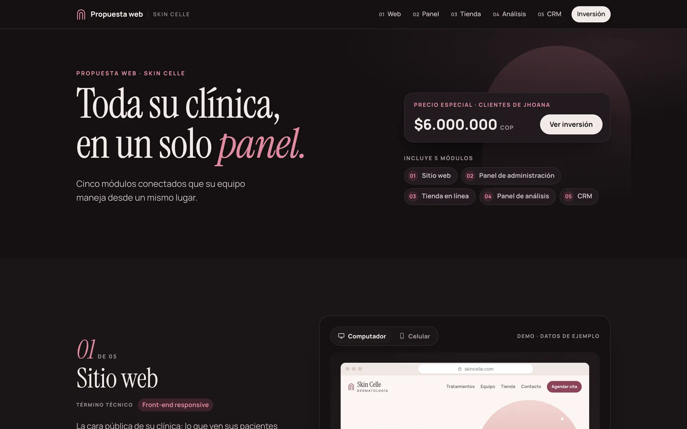
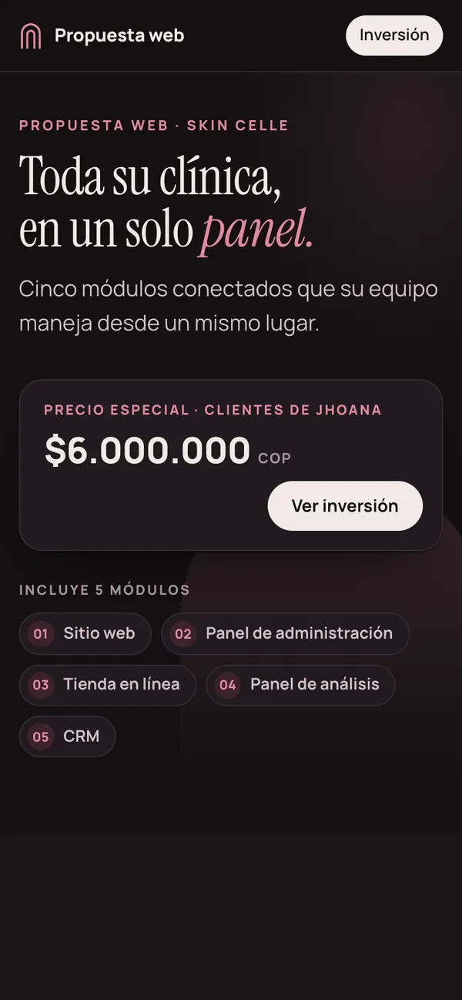
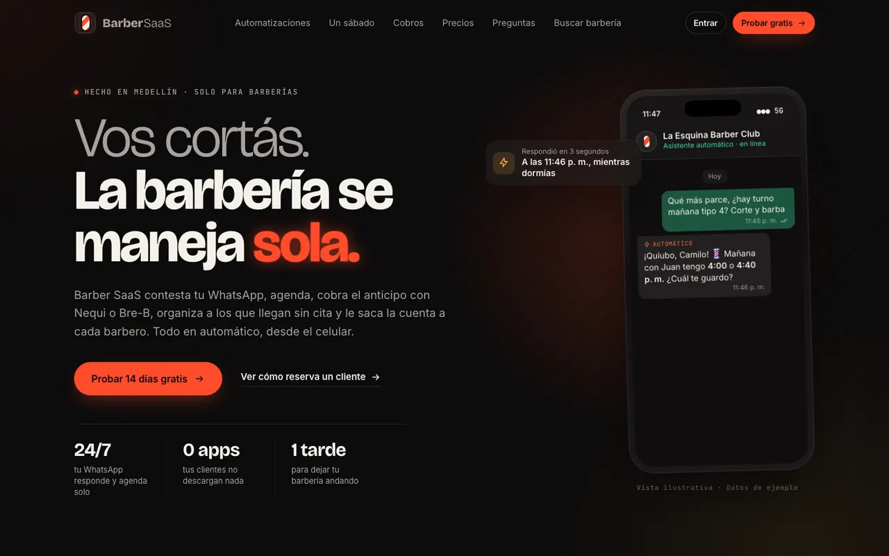
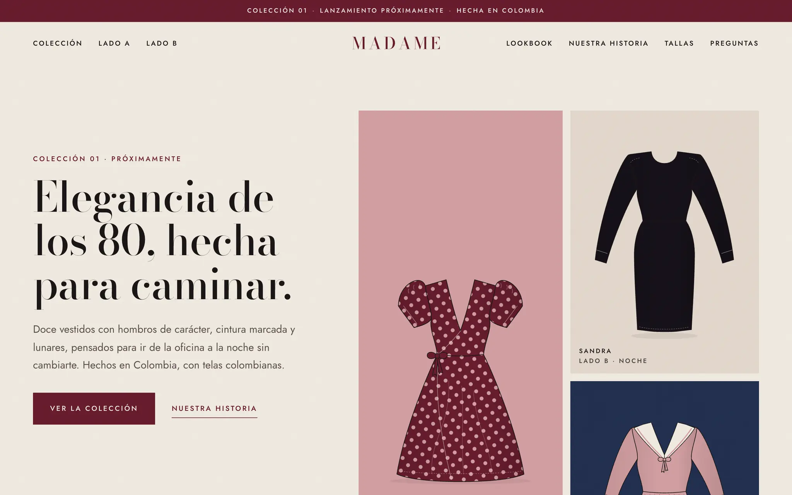
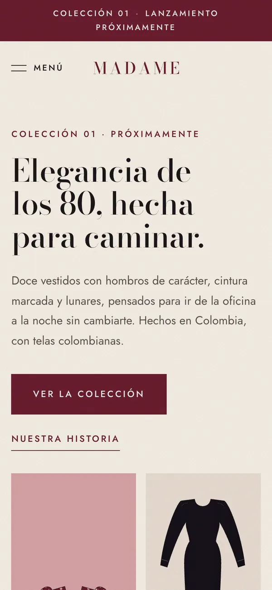

01
Vereda
Café colombiano de origen desde Sevilla, Valle. Colecciones, ritual de preparación e historia de la finca, con envíos a toda Colombia.
Ver sitio ↗
Portafolio · Webs y sistemas
Hoteles, spas, cafés, marcas personales y sistemas a la medida. Cada sitio nace de la identidad de su marca: ninguno sale de una plantilla.
01 · Hoteles
Hoteles boutique, cabañas y apart-hoteles con reserva directa, galerías que venden la experiencia y WhatsApp a un toque.
02 · Spa
Spa de lujo en Medellín: masajes, faciales y cuidado capilar. Un sitio cálido, con reserva por WhatsApp y un selector de experiencias desde la primera pantalla.

03 · Marca personal
Sitios para profesionales que venden lo que saben y cómo lo hacen: portafolio curado, tono propio y contacto directo.
04 · Café
Marcas de café con historia: tienda de origen, cafetería con brunch y una carta digital que se busca por plato o ingrediente.
Café colombiano de origen desde Sevilla, Valle. Colecciones, ritual de preparación e historia de la finca, con envíos a toda Colombia.
Ver sitio ↗
Café y brunch en Laureles–Estadio. Hero cinematográfico con un colibrí animado, talleres, el espacio y la carta a un clic.
Ver sitio ↗
Menú digital con buscador por plato o ingrediente, categorías y «lo que más piden». Se abre desde el QR de la mesa.
Ver la carta ↗
06 · Inmobiliaria
Pasa el cursor por la imagen: así se descubre una propiedad de alto valor, sin ruido.

07 · Sistemas
Cuando una web no alcanza: paneles, tiendas, agenda y automatización que trabajan solos.


Toda la clínica en un solo panel: cinco módulos conectados.

«Vos cortás. La barbería se maneja sola.»
08 · Moda
Boceto de tienda para una marca de vestidos con la elegancia de los 80: colección 01, lookbook, tallas e historia de la marca.
Ver la tienda ↗

09 · Detalles
Un sobre con sello que se abre, un tulipán que florece y una carta que aparece. Piezas privadas para sorprender a alguien: aquí se muestra solo su diseño.
Toca la carta para voltearla.